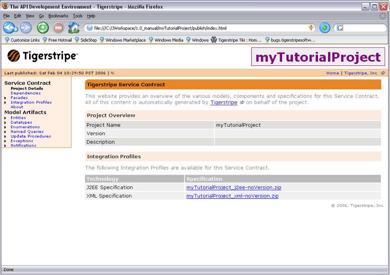

To facilitate collaboration between teams and place Service Contracts as a true interaction point, Tigerstripe Workbench can generate a web-based document of your Service Contract, also providing a placeholder for the generated technology specific integration profiles.

Once the design of your Service Contract is complete and teams begin to build the implementation of the Service Contract and Business Process Managers start consuming the Service Contract, it is important to provide a single source of information for your Service Contract. To facilitate this, Tigerstripe provides the option to publish a Service Contract to a web-site.
The result of a publish operation is a self-contained web site that can either be browsed locally directly from a desktop or from a fully featured hosted web-site. The content of the published information is intended for Architects and Engineers that will either implement the Service Contract or consume its capabilities. The published web-site does not require access to Tigerstripe Workbench; it is fully accessible through your web-browser.
The generated web-site contains the following information:
- Documentation on all artifacts present in the model. The description provided during the model design phase is captured and displayed.
- Documentation about the Tigerstripe model itself, such as version information, build information, and potential dependencies.
- Direct links to zipped version of the generated integration profiles, providing a convenient access point for others to download the produced specifications.